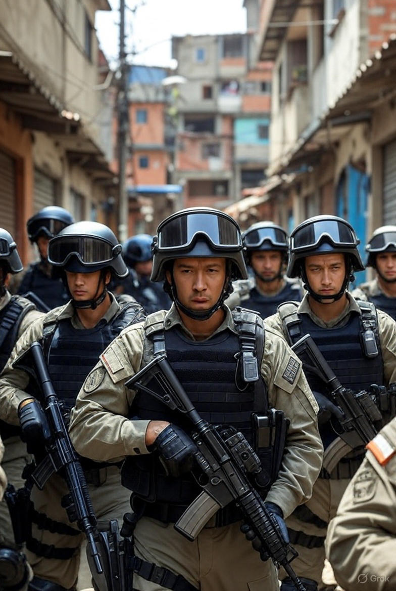
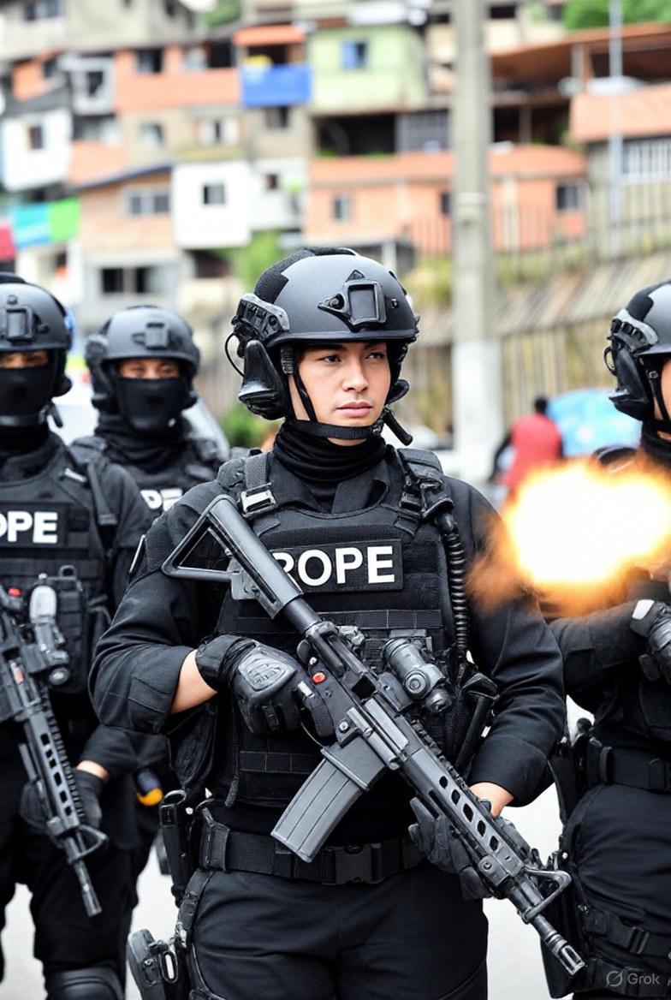

Primeiro Slide
Descrição do primeiro slide aqui.

Segundo Slide
Outra descrição legal.

Terceiro Slide
Última imagem do carrossel.
Descrição do primeiro slide aqui.
Outra descrição legal.
Última imagem do carrossel.
No fim de outubro de 2025, o Rio de Janeiro viveu o dia mais sangrento de sua história policial. Em uma única operação batizada de “Contenção”, desencadeada nos complexos do Alemão e da Penha, 121 pessoas perderam a vida em pouco mais de 24 horas. Quatro eram policiais — dois deles do BOPE —, mortos em confronto. Os outros 117 foram classificados pelo Estado como criminosos ligados ao Comando Vermelho. A tática usada foi o chamado “muro humano” na mata da Serra da Misericórdia: centenas de agentes fecharam todas as rotas de fuga, transformando a encosta em um funil mortal. No dia seguinte, moradores desceram a serra carregando corpos nos ombros e os depositaram em uma praça da Penha, em um gesto silencioso de revolta e desespero. A imagem daqueles corpos alinhados no chão correu o mundo e marcou o episódio como o mais letal já registrado em uma operação policial no Brasil, superando até mesmo Jacarezinho em 2021. A cifra oficial de 121 mortos ainda é questionada por defensores de direitos humanos, que apontam sinais de execuções sumárias e corpos com marcas de tiros à queima-roupa. Mas, até o momento, é o número que o governo do estado sustenta e que entrou para os registros como o saldo final de uma única manhã de guerra nas favelas cariocas.